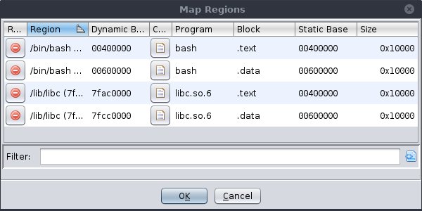

|
Regions refer to ranges of allocated or reserved memory reported by the target. The precise meaning of these regions may vary depending on the nature of the target. For user-mode applications, this is generally pages of memory allocated for image sections, the stack, the heap, etc. The regions manager allows the user to rename pages and modify the recorded permissions. Note that such modifications do not affect the target; but only the recording.
The table has the following columns:
Other than modifications enabled by the table, the Regions window provides the following actions:
This action is analogous to the Map Modules and Map Sections actions from the Modules window. It searches the tool's open programs for blocks matching the selected regions and proposes new mappings. Users who prefer this should also consider using the Map Regions debugger bot. For the best result, the selection regions should comprise a complete module. In particular, it should include the region containing the module's image base, as the offset from this base is used in scoring the best-matched blocks. Additionally, the region names must include the module's file name, otherwise the matcher has no means to identify a corresponding program.
|  |
This action is available from the pop-up menu, when there is a selection of regions and there is an open program. It behaves like Map Regions, except that it will attempt to map the selected regions to blocks in the current program only. This is useful if the regions are not named according to the module filename. The selected regions should still comprise a complete module for best results.
This action is available from a single region's pop-up menu, when there is an open program. It behaves like Map Regions, except that it will propose the selected region be mapped to the block containing the cursor in the static listing.
This action is available when at least one region is selected. It selects all addresses in the dynamic listing contained by the selected regions.
This action is available when the dynamic listing's cursor is at a valid location. It selects the region containing that cursor. If the dynamic listing has a selection, it selects all regions intersecting that selection.
This action is available when a trace is active. It adds a new region to the memory map. It should only be used for emulation or to correct or diagnose trace recording issues.
This action is available when at least one region is selected. It deletes those regions. Use this with caution, since recovering those regions could be difficult. In general, this should only be used to remove regions that were manually added.
This action is available when a trace is active. It forces all physical address spaces into
the view. Ordinarily, only those addresses contained in a region at the active snap are
presented in the listing and memory windows. When this toggle is on, regions are ignored.
Instead, all physical addresses are presented. (Here "physical" includes all memory spaces
except OTHER.) This toggle applies only to the current trace for the duration it
is open.